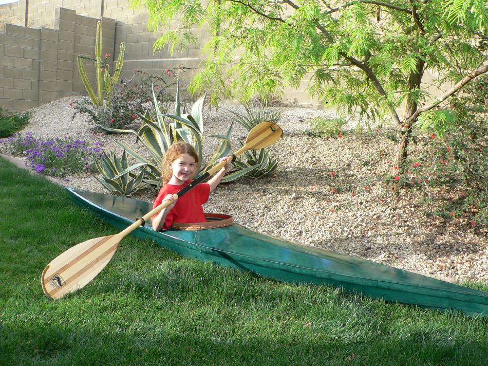

| Sea Flea by John Wilmot (US) | Menu Last Page Next Page |
|

John, from Phoenix, Arizona has just completed the first of two Sea Flea's for his daughters aged 8 and 10. The Sea Flea has been shortened to 10ft and weighs 10 lbs. The frame is constructed of plywood cross sections and redwood stringers. The skin is 8.5oz nylon coated with 2-part urethane. The grin on her face says it all !
|
|